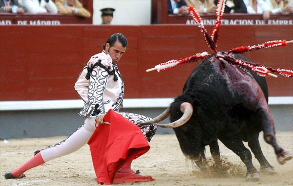

Цікаві факти про португальську кориду

Корида вважається традиційним іспанським видовищем в формі бою биків, проте вона практикується і в інших країнах. Так, в Португалії формою
кориди є торада. Цікаві факти про португальську кориду розкажуть про її основні відмінності від іспанської та інших особливостях.
Цікаві факти про Чупа-чупс

Чупа-чупс — льодяники на паличці, які пробували мільйони дітей по всьому світу. Однак колись вони були лише експериментом одного підприємця з
Іспанії. Чим його творіння зобов’язане своїм успіхом? Пропонуємо цікаві факти про чупа-чупс, які розкриють секрет популярності льодяників.
Цікаві факти про Авраама Лінкольна

На виборах в США 6 листопада 1860 переміг кандидат в президенти від Республіканської партії Авраам Лінкольн. Особистість цієї людини, вихідця
з простої селянської родини, стала асоціюватися в американців з працьовитістю і чесністю, його називали людиною, яка «зробила себе сама».
Про дитинство, блискучу політичну кар’єрю і історичне значення 16-го президента США і визволителя американських рабів розкажуть факти з життя
Авраама Лінкольна.